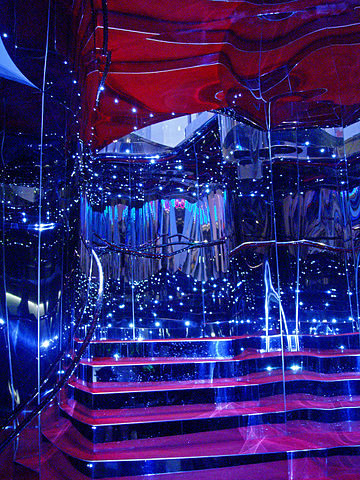
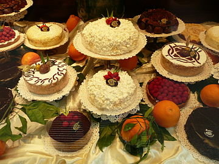
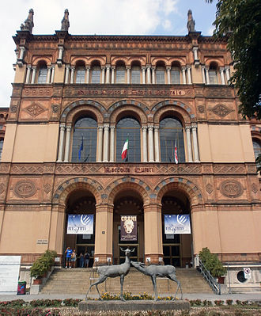

Milan, Italy
The Italian city of Milan is one of the most-visited tourist destinations in the European Union,
with 8.81 million visitors in 2017, putting it 15th in the world when ranked by tourist visits.
Tourists find that Milan has good entertainment and cultural opportunities (i.e. shopping, cuisine,
music, nightlife and the arts) and that leisure activities are organized well and to a professional level.
Restaurants and other eating places
Milan has several world-renowned restaurants and cafés. Most of the more refined and upper-class restaurants
are found in the historic centre, while the more traditional and popular ones are mainly located in the Brera
and Navigli districts.


Museums in Milan
Milan has a plethora of museums, ranging from science and industry to antiquities and art such as:
1. Pinacoteca di Brera
2. Museo del Novecento
3. Museo Civico di Storia Naturale di Milano
4. Sforza Castle museums
5. Mudec, "the museum of cultures"
